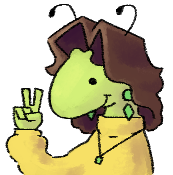

this is a real picture of meHello! My name is Kaia. I go by "kaiakairos" online and I'm from Omaha, Nebraska. I'm a hobbyist game developer, and have been making games independently my entire life. Most of my experience lies in programming using the Godot game engine and its scripting language GDScript. I mostly make games just because I have fun doing so, but I've also attempted a few serious releases and helped on other people's projects. I also participate in my local game dev scene, doing showcase events and jams.
- Over five years of using Godot Engine and GDScript programming.
- Using Godot's GDExtension Features.
- Experience in C++ and HTML.
- Working with Steam's API and other backend tools.
- Great at making game feel. ( or "juice." )
- Great at making foundations that larger game projects can be built upon.
- Designing and programming games of many genres. ( Action, puzzle, sandbox, platformers, RPGs )
- Lots of experience making nice UI.
- Using Github for both personal use and on team projects.
WAXWEAVER - A sandbox game developed over a year in Godot 4.2. Published on Steam and available for free. It is the largest project I have worked on and completed.
PLINKO'S BOMB DEFUSAL - The most recent game I've made, for a jam. A great showcase of my current skills. I was informed recently that they've been showing this game to students at one of the local colleges, which warms my heart.
ENDOPARASITIC 2 - Worked on level design for 3ish months in the summer and fall of 2024. Used Godot's 2D editor extensively. Also helped with playtesting and QA.
BUG BALL 3D - Steam game I self-published in October 2024. Proof that I have experience making fast paced games in the Godot Engine.
MY WEBSITE - Check out the rest of my work right here on my website! (Also proof I can do HTML and CSS)
GITHUB - Where you can find (almost) all of the code that make up my projects.
NEWGROUNDS - Where I post my best work.
ITCH.IO - Has my newgrounds games plus more. Old junky jam games and some software tools I've made as well.
STEAM DEVELOPER PAGE - Everything I've published to steam
BLUESKY - Where I'm most easily contactable.